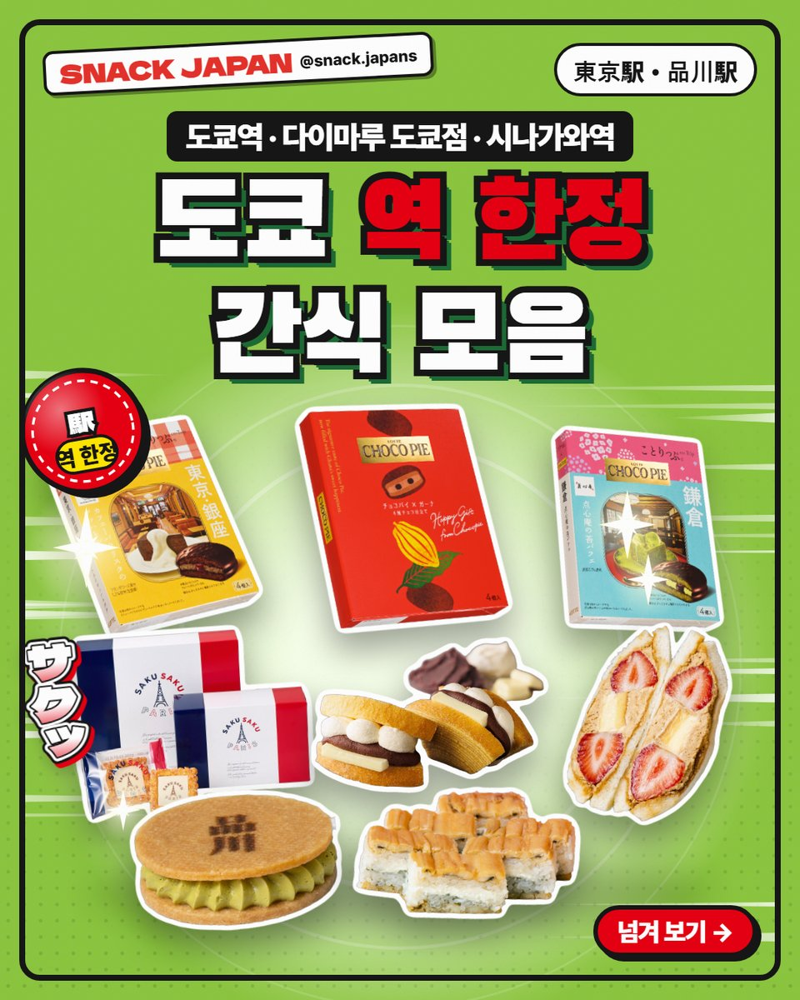
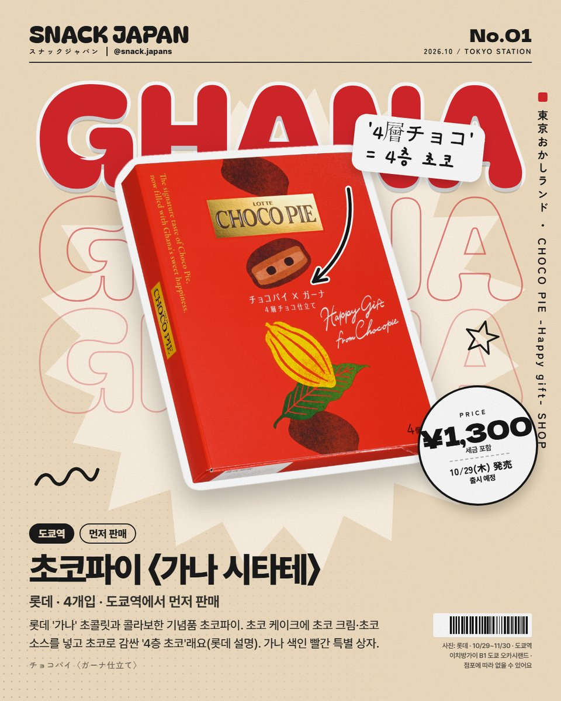
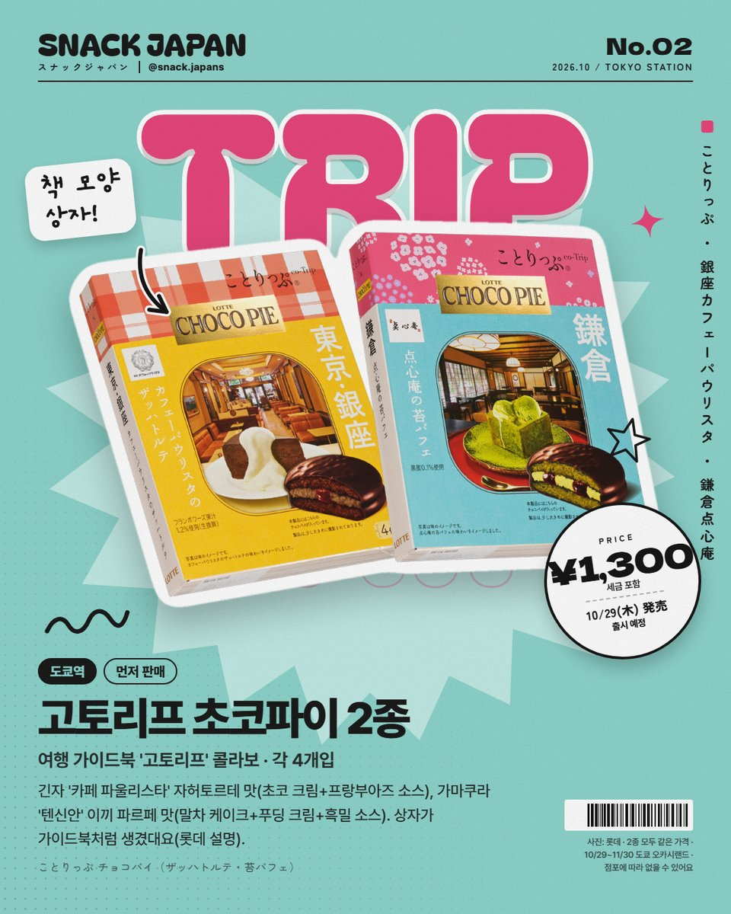
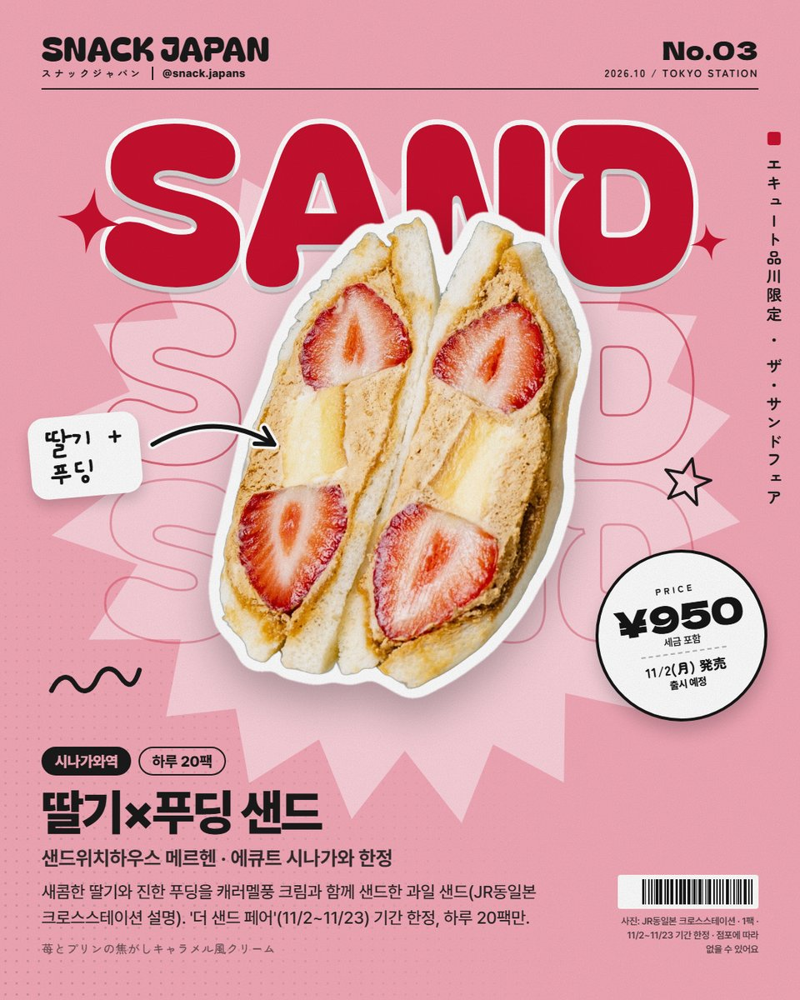
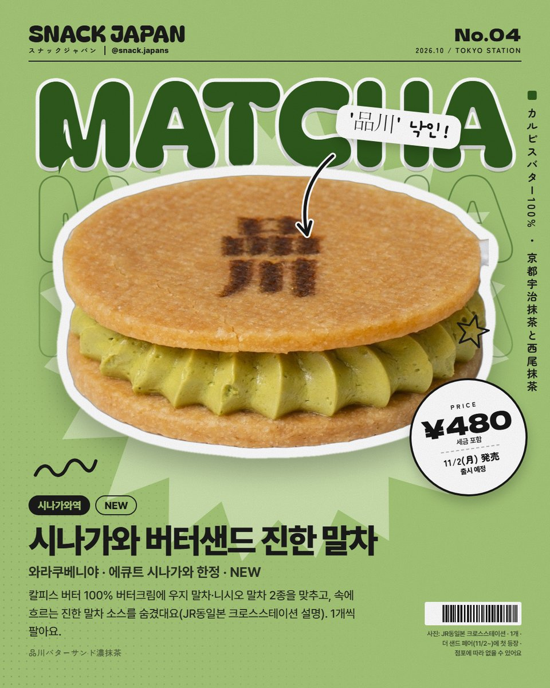
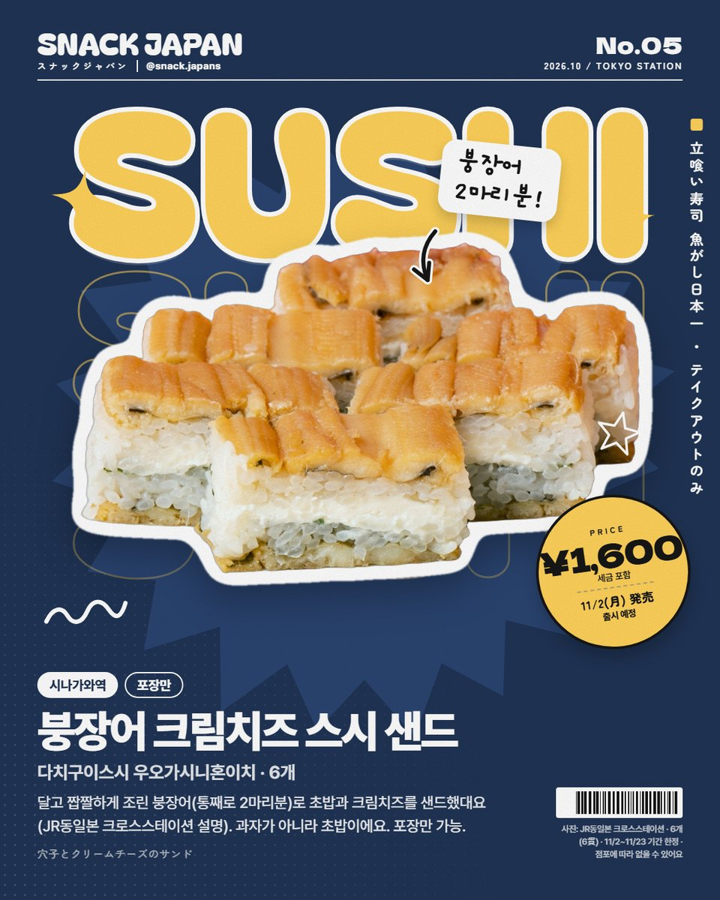
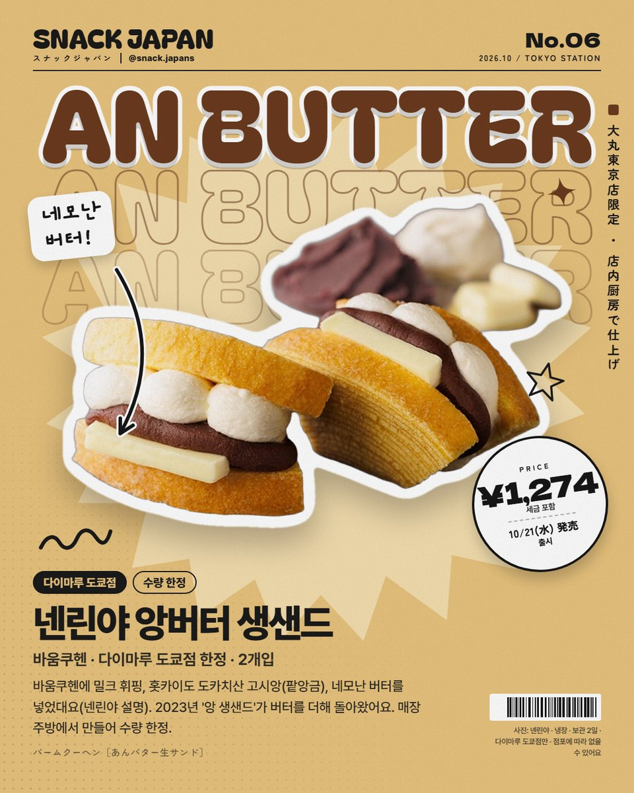
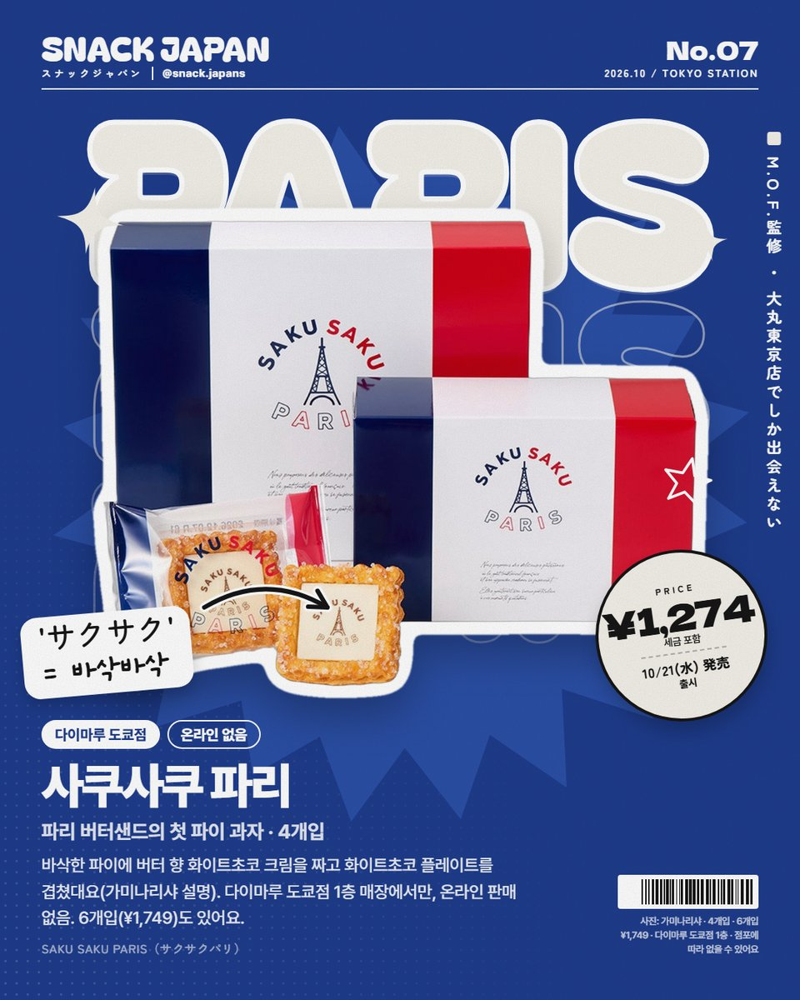
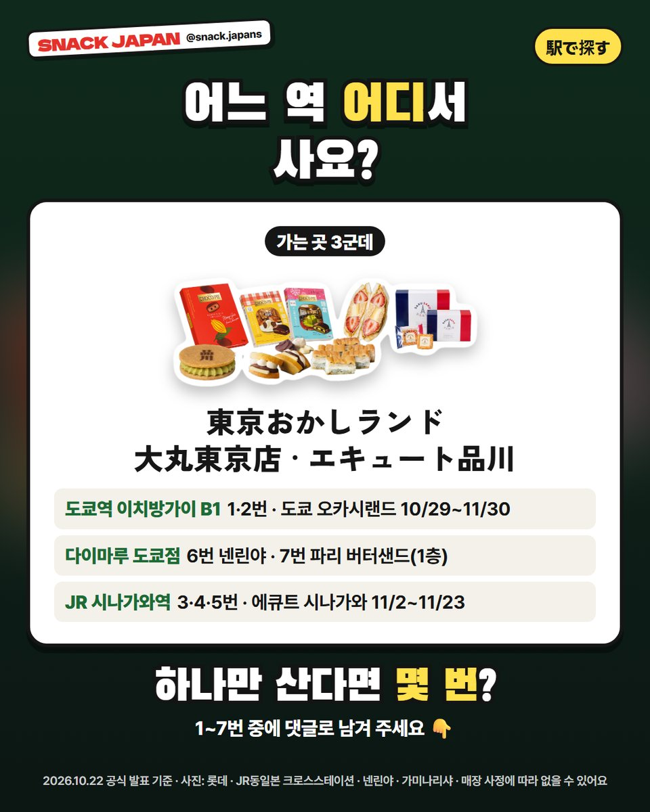

도쿄역 한정 기념품 간식 7가지, 초코파이 기념품 상자부터 시나가와역 샌드 페어까지
초코파이가 도쿄역에서 기념품 상자로 나와요! 도쿄역·다이마루 도쿄점·시나가와역에서만 사는 한정 간식 7가지를 공식 발표로만 모았어요.
한국인도 다 아는 초코파이가
도쿄역에서 기념품 상자로 나온다고요?! 🚄
도쿄역·다이마루 도쿄점·시나가와역에서만 사는
한정 간식 7가지를
공식 발표로만 모아 봤어요!

1. 초코파이 〈가나 시타테〉 (롯데)
롯데가 도쿄역 '도쿄 오카시랜드'에서 처음 여는 행사
'CHOCO PIE -Happy gift- SHOP'에서 먼저 파는 기념품 초코파이예요.
롯데 '가나' 초콜릿과 콜라보해서
초코 케이크에 초코 크림·초코 소스를 넣고
초코로 감싼 '4층 초코'래요 (롯데 설명).
- 기간: 10/29(목)~11/30(월), 9:00~21:00
- 파는 곳: 도쿄역 야에스 쪽 '도쿄역 이치방가이' 지하 1층, 도쿄 오카시랜드 이벤트 공간
- 4개입, 가나 색인 빨간 특별 상자
- 일본 이름: チョコパイ〈ガーナ仕立て〉
- 가격: 사진 카드에 정리해 뒀어요

2. 고토리프 초코파이 2종 (롯데)
여행 가이드북 '고토리프(ことりっぷ)'와 콜라보한 초코파이 2종이에요.
상자가 가이드북처럼 생겼고,
표지의 작은 창으로 가게와 디저트가 보여요 (롯데 설명).
- 긴자 '카페 파울리스타' 자허토르테 맛: 초코 케이크 + 초코 크림 + 프랑부아즈 소스
- 가마쿠라 '텐신안' 이끼 파르페 맛: 말차 케이크 + 푸딩 크림 + 흑밀 소스
- 각 4개입, 1번과 같은 곳·같은 기간에 먼저 판매
- 일본 이름: ことりっぷ チョコパイ
- 가격: 사진 카드에 정리해 뒀어요 (2종 같은 가격)

3. 딸기×푸딩 샌드 (에큐트 시나가와)
JR 시나가와역 '에큐트 시나가와'가
11/2(월)~11/23(월·공휴일)에 '더 샌드 페어'를 처음 열어요.
에큐트 시나가와 한정 7개를 포함해 25개 넘는 '샌드'가 나온대요.
그중 하나가 새콤한 딸기와 진한 푸딩을
캐러멜풍 크림과 함께 샌드한 과일 샌드예요 (JR동일본 크로스스테이션 설명).
- 가게: 샌드위치하우스 메르헨
- 하루 20팩 한정
- 일본 이름: 苺とプリンの焦がしキャラメル風クリーム
- 가격: 사진 카드에 정리해 뒀어요

4. 시나가와 버터샌드 진한 말차 (에큐트 시나가와)
칼피스 버터 100% 버터크림에
우지 말차·니시오 말차 2가지를 맞추고,
속에 흐르는 진한 말차 소스를 숨겼대요 (JR동일본 크로스스테이션 설명).
- 가게: 와라쿠베니야
- 에큐트 시나가와 한정, 새 상품, 1개씩
- 일본 이름: 品川バターサンド濃抹茶
- 가격: 사진 카드에 정리해 뒀어요

5. 붕장어 크림치즈 스시 샌드 (에큐트 시나가와)
이건 과자가 아니라 초밥이에요!
달고 짭짤하게 조린 붕장어로
초밥과 크림치즈를 샌드했대요.
붕장어를 통째로 2마리분 썼대요 (JR동일본 크로스스테이션 설명).
- 가게: 다치구이스시 우오가시니혼이치
- 6개, 포장만 가능
- 일본 이름: 穴子とクリームチーズのサンド
- 가격: 사진 카드에 정리해 뒀어요

6. 넨린야 앙버터 생샌드 (다이마루 도쿄점)
바움쿠헨 가게 넨린야의 다이마루 도쿄점 한정 메뉴예요.
촉촉한 바움쿠헨에 밀크 휘핑,
홋카이도 도카치산 고시앙(팥앙금),
네모나게 자른 버터를 넣었대요 (넨린야 설명).
2023년 11월에 나왔다가 쉬던 '앙 생샌드'가
버터를 더해 돌아온 거래요.
- 출시: 10/21(수)
- 매장 주방에서 만들어서 수량 한정
- 냉장, 보관 2일, 2개입
- 일본 이름: バームクーヘン［あんバター生サンド］
- 가격: 사진 카드에 정리해 뒀어요

7. 사쿠사쿠 파리 (다이마루 도쿄점)
올해 6월 다이마루 도쿄점에 처음 문을 연 '파리 버터샌드'의
첫 파이 과자예요.
바삭한 파이에 버터 향 화이트초코 크림을 짜고
화이트초코 플레이트를 겹쳤대요 (가미나리샤 설명).
- 출시: 10/21(수)
- 파는 곳: 다이마루 도쿄점 1층 화양과자 매장만, 온라인 판매 없음
- 4개입·6개입
- 일본 이름: SAKU SAKU PARIS（サクサクパリ）
- 가격: 사진 카드에 정리해 뒀어요

8. 어느 역 어디서 사요?
- 도쿄역 이치방가이 지하 1층 도쿄 오카시랜드: 1·2번 (10/29~11/30)
- 다이마루 도쿄점: 6번 넨린야 · 7번 파리 버터샌드 (1층)
- JR 시나가와역 에큐트 시나가와: 3·4·5번 (11/2~11/23)

총평
- 추천: 도쿄역에서 기념품 고르는 분, 시나가와역 들르는 분
- 기준: 10월 22일 각 회사 공식 발표
- 참고: 수량 한정·기간 한정이라 일찍 끝날 수 있어요
도쿄 여행 기념품, 하나만 산다면 몇 번이에요? 🎁
여행 전에 저장해 두세요!
사진: 롯데 · JR동일본 크로스스테이션 · 넨린야 · 가미나리샤